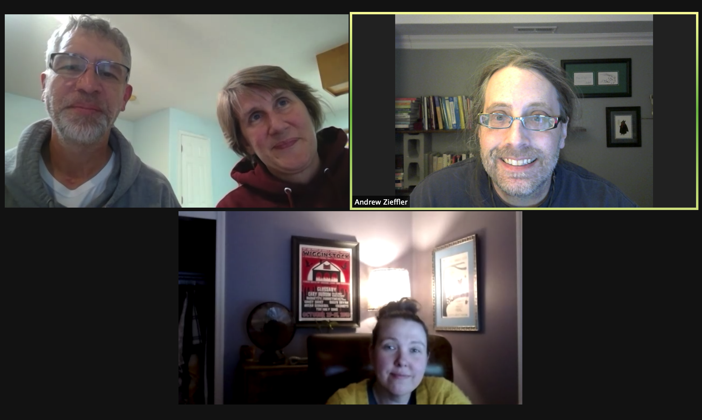

This last weekend I competed in KVSC’s annual Trivia Weekend. Usually this is a 50 consecutive hour contest, but for 2021, it was only 33 hours. The last few years I competed with the team Take Me Back to Hackensack and we finished 31st out of 58 teams. Here is a photo of our team for this year.

This year we had a small team; between 2 and 6 players, depending on the hour, with four of us that were the base. Team size is unlimited, and the teams that do well in the contest are big. When we finished 8th (in 2006) our team had 20-30 members every hour.
The questions are hard and are more Google detective than trivia, per se. For example, one of the questions this year was:
Chills, and thrills. This 1968 comic featured a poster advertising a film playing at the Bijou theater. Name the comic strip on which poster appears, the name of film playing at the theater in the comic strip, an the month/date the comic strip first appeared.
The answer: Bugs Bunny / The Fiend / Sept 24
We did not get this one correct. Another question:
Kellogg’s ran a limited edition of fruit loops / tropical. On the back of box are 4 games. What was the name of the game that wanted you to locate 4 fruit of wrong color?
Answer: Flipped Fruit
We did get that one. The questions vary in point value (10 to 250 points), and also in how long you have to answer. The questions are read on the air, and you call your answer in to a phone line. It requires team communication, people searching, people calling in answers, and a high degree of sleep deprivation (at least it did when I was younger than I am now).
I started playing trivia in 1989, when I cameoed on the team Hindu, Quaker, Sophomore Guys. I have played most years since. We changed our team name almost every year in the beginning (we were young and bucked tradition; I was trying to remember some of these names but the trivia history page only goes back to 1994). We then, consistently became Intimate Tupperware Party (or some variation thereof) from 1994-2012.